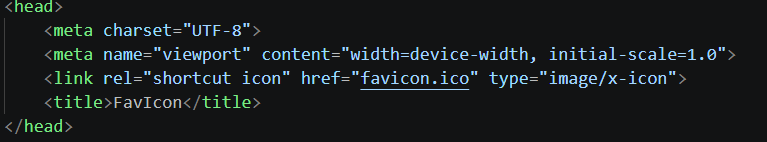

FavIcon nada mais é que o Ícone da guia.
Aquele ícone que fica do lado do nome do site, tipo o do Youtube.
Diferente de outros arquivos, esse usa o formato ICO, que é pra uso próprio do FavIcon.
Dessa vez eu vou colocar um emoji, mas eu consigo por a imagem que for, só precisa estar no formato certo.
Estou pegando o emoji do site favicon.io, que além de disponibilizar downloads de emojis, também tem outras funções sobre o mesmo assunto e mostra o código que será usado no HEAD → na cabeça do programa.
É bem fácil de fazer. Você faz seu icon, depois vai no programador, na área HEAD você vai digitar por LINK e procurar o FAVICON.
E aí na parte sublinhada, você adiciona o documento do seu ícone! É bem simples.
